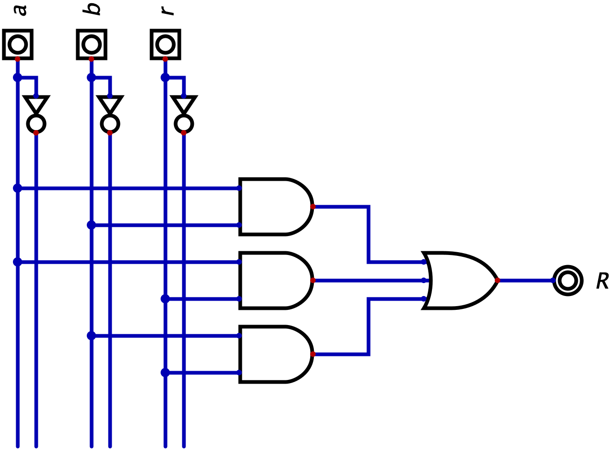

Definizione - Algebra binaria
Con algebra si indica un sistema matematico formato da un insieme di operatori definiti assiomaticamente in grado di descrivere con una espressione ogni possibile funzione di variabili.
Ogni algebra è definita da:
Un'espressione è una stringa finita di costanti, variabili, operatori e parentesi.
Ogni algebra è definita da:
- un insieme di simboli;
- un insieme di operazioni;
- un insieme di postulati.
Un'espressione è una stringa finita di costanti, variabili, operatori e parentesi.
Osservazioni personali - Esempi
Esempi di algebre sono:
- l'algebra di commutazione (AND, OR e NOT);
- l'algebra del NAND;
- l'algebra del NOR;
- l'algebra lineare.
Definizione - Algebra di commutazione
L'algebra di commutazione ("switching algebra") fu definita da Claude Shannon ed è composta da:
Nell'algebra di commutazione, un'espressione è una stringa finita di costanti, variabili, operatori e parentesi dove:
- i simboli \( \{ 0, 1 \}\);
- le operazioni \( \{ +, \cdot, ' \}\), ovvero la somma logica (l'OR, \( +\)), il prodotto logico (l'AND, \( \cdot\)) e la complementazione (il NOT, \( '\)).
- un insieme di postulati, corrispondenti alle tabelle della verità dell'AND, dell'OR e del NOT.
Nell'algebra di commutazione, un'espressione è una stringa finita di costanti, variabili, operatori e parentesi dove:
- si definiscono costanti i simboli \( 0\) e \( 1\);
- si definiscono variabili dei simboli che possono assumere il valore \( 0\) o \( 1\);
- ogni variabile e costante da sola è una espressione;
- \( A'\), \( A \cdot B\) e \( A + B\) sono espressioni.
Definizione - Equivalenze notevoli (algebra di commutazione)
Per ottenere da una generica espressione una espressione più semplice, può essere utile utilizzare le equivalenze notevoli, ovvero delle relazioni che permettono di implementare lo stesso comportamento con diverse strutture.
Le seguenti sono proprietà valide per il prodotto e per la somma logica:
Le seguenti sono proprietà valide per il prodotto e per la somma logica:
- la proprietà commutativa (valida sia per la somma che per il prodotto logico), ovvero: \begin{aligned} & a \cdot b = b \cdot a & a + b = b + a \end{aligned}
- la proprietà associativa (valida sia per la somma che per il prodotto logico), ovvero \begin{aligned} & a \cdot (b \cdot c) = (a \cdot b) \cdot c & a + (b + c) = (a + b) + c \end{aligned}
- la proprietà distributiva (valida sia per la somma che per il prodotto logico), ovvero \begin{aligned} & (a \cdot b) + (a \cdot c) = a \cdot (b + c) & (a + b) \cdot (a + c) = a + (b \cdot c) \end{aligned}
- la proprietà dell'idempotenza (valida sia per la somma che per il prodotto logico), ovvero \begin{aligned} & a \cdot a = a & a + a = a \end{aligned}
- la proprietà dell'identità (ovvero applicare l'operazione all'elemento neutro), ovvero \begin{aligned} & a \cdot 1 = a & a + 0 = a \end{aligned}
- la proprietà del limite, ovvero \begin{aligned} & a \cdot 0 = 0 & a + 1 = 1 \end{aligned}
- la proprietà dell'involuzione, ovvero \begin{aligned} & (a')' = a \end{aligned}
- la proprietà della limitazione, ovvero \begin{aligned} & a \cdot a' = 0 & a + a' = 1 \end{aligned}
- la proprietà della combinazione, ovvero \begin{aligned} & (a \cdot b) + (a \cdot b') = a & (a + b) \cdot (a + b') = a \end{aligned}
- la prima e la seconda legge di De Morgan, ovvero \begin{aligned} & (a \cdot b)' = a' + b' & (a + b)' = a' \cdot b' \end{aligned}
- la proprietà del consenso, ovvero \begin{aligned} & (a \cdot b) + (a' \cdot c) + (b \cdot c) = (a \cdot b) + (a' \cdot b) \\ & (a + b) \cdot (a' + c) \cdot (b + c) = (a + b) \cdot (a' + b) \end{aligned}
Esempio - Manipolazione algebrica di espressioni
Consideriamo la seguente espressione: \[ R(a, b, r) = (a' \cdot b \cdot r) + (a \cdot b' \cdot r) + (a \cdot b \cdot r') + (a \cdot b \cdot r) \] ovvero  Consideriamo però un'altra possibile semplificazione aggiungendo il mintermine (\( a \cdot b \cdot r\)) due volte (possibile grazie alla proprietà dell'idempotenza) \begin{aligned} & (a' \cdot b \cdot r) + (a \cdot b' \cdot r) + (a \cdot b \cdot r') + (a \cdot b \cdot r) & \iff \\ & (a' \cdot b \cdot r) + (a \cdot b' \cdot r) + (a \cdot b \cdot r') + (a \cdot b \cdot r) + (a \cdot b \cdot r) + (a \cdot b \cdot r) & \iff \end{aligned} a questo punto è possibile raccogliere i termini \( (b \cdot r)\), \( (a \cdot r)\), \( (a \cdot b)\)\begin{aligned} & (b \cdot r \cdot (a' + a)) + (a \cdot r \cdot (b' + b)) + (a \cdot b \cdot (r' + r)) & \iff \end{aligned} e per la proprietà della limitazione prima e dell'identità poi \begin{aligned} & (b \cdot r \cdot 1) + (a \cdot r \cdot 1) + (a \cdot b \cdot 1) & \iff \\ & (b \cdot r) + (a \cdot r) + (a \cdot b) & \end{aligned} si ottiene un'espressione meno costosa, equivalente al seguente schema logico
Consideriamo però un'altra possibile semplificazione aggiungendo il mintermine (\( a \cdot b \cdot r\)) due volte (possibile grazie alla proprietà dell'idempotenza) \begin{aligned} & (a' \cdot b \cdot r) + (a \cdot b' \cdot r) + (a \cdot b \cdot r') + (a \cdot b \cdot r) & \iff \\ & (a' \cdot b \cdot r) + (a \cdot b' \cdot r) + (a \cdot b \cdot r') + (a \cdot b \cdot r) + (a \cdot b \cdot r) + (a \cdot b \cdot r) & \iff \end{aligned} a questo punto è possibile raccogliere i termini \( (b \cdot r)\), \( (a \cdot r)\), \( (a \cdot b)\)\begin{aligned} & (b \cdot r \cdot (a' + a)) + (a \cdot r \cdot (b' + b)) + (a \cdot b \cdot (r' + r)) & \iff \end{aligned} e per la proprietà della limitazione prima e dell'identità poi \begin{aligned} & (b \cdot r \cdot 1) + (a \cdot r \cdot 1) + (a \cdot b \cdot 1) & \iff \\ & (b \cdot r) + (a \cdot r) + (a \cdot b) & \end{aligned} si ottiene un'espressione meno costosa, equivalente al seguente schema logico
Consideriamo ora una possibile semplificazione raccogliendo \( a \cdot b\) agli ultimi due termini: \begin{aligned} & (a' \cdot b \cdot r) + (a \cdot b' \cdot r) + (a \cdot b \cdot r') + (a \cdot b \cdot r) & \iff \\ & (a' \cdot b \cdot r) + (a \cdot b' \cdot r) + (a \cdot b) \cdot (r' + r) & \iff \end{aligned} e semplificando \( r' + r\) con la proprietà della limitazione prima e dell'identità poi, si ottiene \begin{aligned} & (a' \cdot b \cdot r) + (a \cdot b' \cdot r) + (a \cdot b) \cdot (1) & \iff \\ & (a' \cdot b \cdot r) + (a \cdot b' \cdot r) + (a \cdot b) \end{aligned} che equivale al seguente circuito

Definizione - Algebra del NAND
L'algebra del NAND permette di esprimere tutte le reti esprimibili tramite l'algebra di commutazione solo con il componente NAND: ciò è possibile grazie ai seguenti postulati che permettono di esprimere i gate NOT, AND e OR in funzione del solo gate NAND, ovvero:
- per esprimere il gate NOT è sufficiente collegare entrambi gli ingressi del NAND allo stesso ingresso, ovvero \[ a' = (a \uparrow a) \] che equivale al seguente schema logico
- per esprimere il gate AND è sufficiente applicare la definizione, cioè si può ottenere negando un NAND, ovvero \[ (a \cdot b) = (a \uparrow b)' = (a \uparrow b) \uparrow (a \uparrow b) \] che equivale al seguente schema logico
- per esprimere il gate OR è necessario applicare la seconda legge di De Morgan, ovvero \[ (a + b) = (a' \cdot b')' = (a' \uparrow b') = ((a \uparrow a) \uparrow (b \uparrow b)) \] che equivale al seguente schema logico
Osservazioni personali - Non associatività del NAND
A differenza del gate OR e AND, il NAND non è associativo: le parentesi sono quindi significative.
Definizione - Algebra del NOR
L'algebra del NOR permette di esprimere tutte le reti esprimibili tramite l'algebra di commutazione solo con il componente NOR: ciò è possibile grazie ai seguenti postulati che permettono di esprimere i gate NOT, AND e OR in funzione del solo gate NOR, ovvero:
- per esprimere il gate NOT è sufficiente collegare entrambi gli ingressi del NOR allo stesso ingresso, ovvero \[ a' = (a \downarrow a) \] che equivale al seguente schema logico
- per esprimere il gate AND è necessario applicare la prima legge di De Morgan, ovvero \[ (a \cdot b) = (a' + b')' = (a' \downarrow b') = ((a \downarrow a) \downarrow (b \downarrow b)) \] che equivale al seguente schema logico
- per esprimere il gate OR è sufficiente applicare la definizione, cioè si può ottenere negando un NOR, ovvero \[ (a + b) = (a \downarrow b)' = (a \downarrow b) \downarrow (a \downarrow b) \] che equivale al seguente schema logico
Osservazioni personali - Non associatività del NOR
A differenza del gate OR e AND, il NOR non è associativo: le parentesi sono quindi significative.